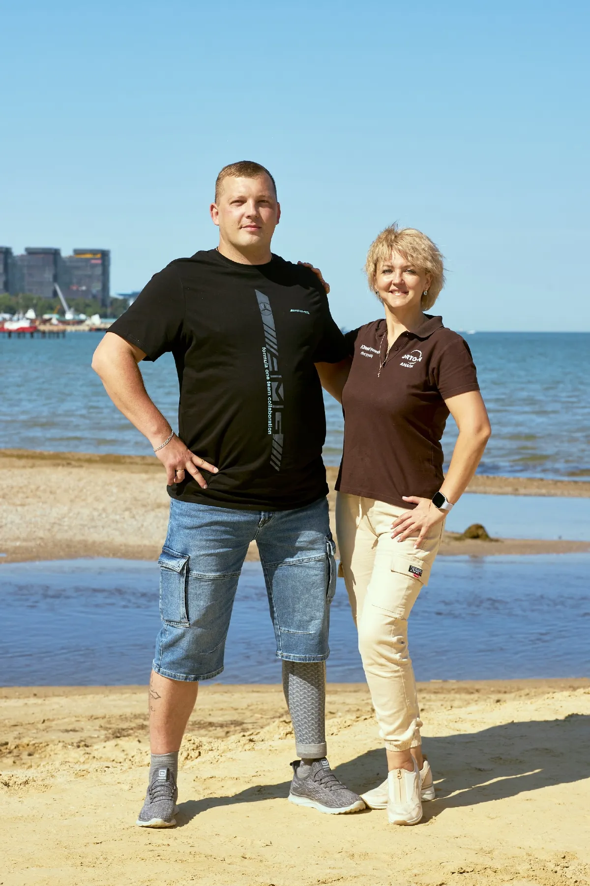
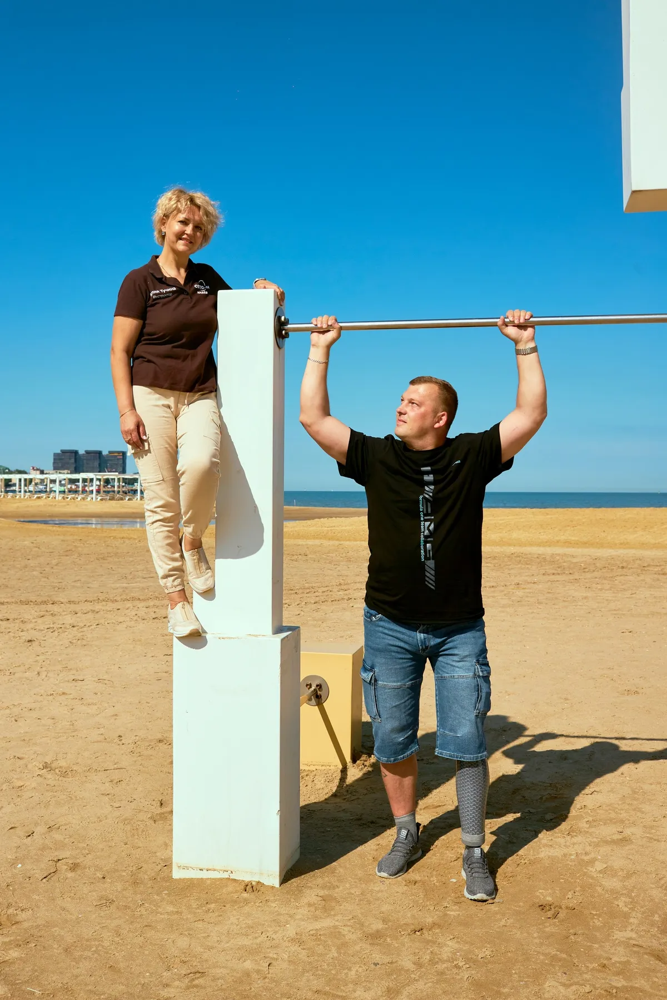
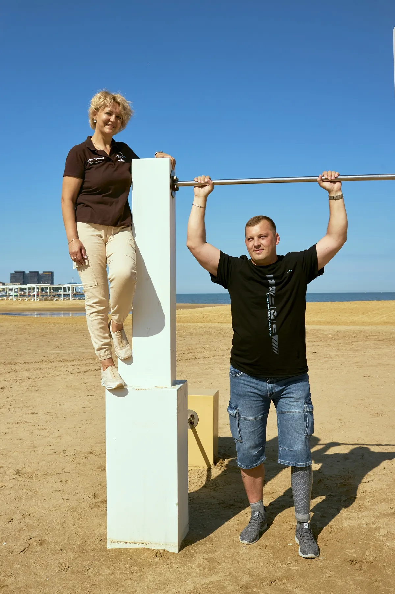

Тучин Иван
Помощник протезиста, участник СВО. Пользователь протеза бедра.
Личным примером показывает активную жизнь после боевых действий.
Юлия и Иван Тучины, Анапа. Помогаем вернуться к активной жизни: уверенно ходить и снова чувствовать опору в каждом дне.

Наши специалисты — это не просто профессионалы, это люди, которые сами прошли этот путь.
Помощник протезиста, участник СВО. Пользователь протеза бедра.
Личным примером показывает активную жизнь после боевых действий.
Инструктор школы ходьбы на протезах.
«Моя работа — это не просто тренировки. Это возвращение людям контроля над своей жизнью, уверенности и свободы движений. 50% успеха — это правильно собранный и настроенный протез. Остальные 50% — умение им управлять, преодоление страха и ежедневный труд».

Мы называем это нашим «семейным консилиумом». Мы прошли этот путь сами от начала и до конца, и теперь помогаем пройти его вам. Поверьте, ограничений не существует — они только в голове!

Каждый день мы слышим от учеников одни и те же болезненные вопросы:
Не оставайтесь с этой проблемой один на один. В нашей школе ходьбы мы разбираем каждый случай индивидуально: не просто даём упражнения, а возвращаем вас к активной жизни — прогулкам по набережной, магазинам и опоре в каждом дне.
Не оставайтесь с проблемой один на один —
задайте вопрос!
Совмещаем профессиональные знания и уникальный личный опыт жизни с протезом.
Подскажем, как оформить ИПРА и электронный сертификат, чтобы получить протез за счёт государства.
Мы не бросаем вас после выдачи изделия. Наша цель — довести вас от первой робкой консультации до уверенной самостоятельной походки без костылей и трости.
Мы всегда рядом в Анапе — ответим на вопросы, поможем разобраться в ситуации или просто подбодрим, когда опустятся руки.
Что говорят люди, с которыми мы работали. Отзывы взяты из 2ГИС — там их можно прочитать целиком.
Хочу выразить огромную благодарность команде «Орто-Н Анапа»!
Выражаю глубокую благодарность всем без исключения сотрудникам компании…
Большое спасибо ребятам из школы ходьбы на протезах.
…их бесценная работа, всё на высоте!!!
Отличный протезист с огромным опытом работы.
Очень хорошие ребята, научат ходить лучше чем мама родная.
Оставьте имя и номер телефона — мы свяжемся с вами и разберём вашу ситуацию без давления.